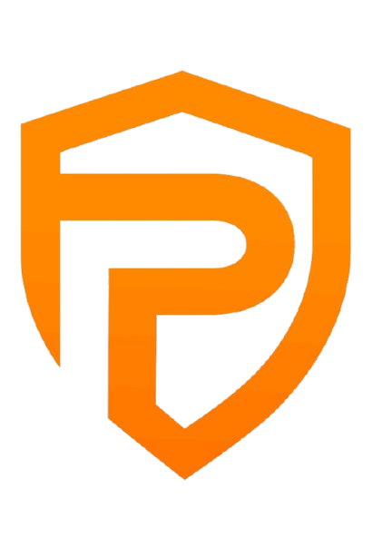

Borrower
- I hold value. I need cash. I refuse to sell my future.
- Selling under pressure is abandoning a thesis — not “taking profit.”
- I will not hand my stack to a black box to feel liquid.

Persat Finance · Persat Labs
Testnet is live. Early users are in.
Mainnet is three disciplined steps away.
Negotiate. Lend. Earn.
Why
A Bitcoin holder needs rent. An emergency hits. An opportunity appears.
Sell the asset you believe in — or go without.
Someone else has capital and wants to earn. But lending without trust is a gamble with no enforcement.
The world doesn’t lack assets or capital.
It lacks infrastructure that lets them meet without surrender.
This is not a feature gap. It is a human dignity gap.
The scar
One problem · two sides
Persat is the infrastructure between them.
Identity
How it feels
Neither side relies only on the other’s goodwill.
Wedge → destination
Live now
Mainnet path
Mainnet-grade connectivity, monitoring, production RPC.
Real tBTC / zBTC / USDC / USDT addresses. Freeze the architecture already under test.
Dedicated keeper keys, strip testnet-only surfaces, production governance posture.
Testnet exists to make those three steps boring — because boring is how credit infrastructure should ship.
Audit-grade evidence and security gates before public real-funds promotion.
Positioning
Trust the person. Enforcement is social or slow.
Trust the algorithm. No negotiation. Pure machine.
Discover the counterparty + structure the relationship + secure the transaction.
White space: P2P credit discovery × onchain secured enforcement.
Market
Direction
Idle digital capital
Bitcoin and stables represent enormous value that cannot safely become credit without custody or chaos.
Origin
Founder & CEO
Lived the “I need liquidity against BTC” problem. Rejected custody as the price of access. Years refining marketplace + trust layer.
Co-founder & CTO
Turned conviction into executable product and architecture. Robotics & AI builder background. Ships the spine.
Domain scar tissue + technical spine. Not tourists in the problem.
Team
Founder & CEO
Problem conviction · research · iteration leadership
Co-founder & CTO
Product · architecture · shipping
The door
Join testnet onboarding. Borrow or lend in a controlled live environment. Help forge the rails you’ll want on mainnet.
Aligned partners who understand credit infrastructure is earned in public testnet, then cut over with discipline.
Persat Finance — the marketplace and trust layer for onchain credit.
Testnet live. Early users welcome.
Mainnet, three steps after the truth comes back from the field.
Persat Labs
Arrow keys · Space · click edges